Clash for ubuntu
Clash for ubuntu
1.下载软件源
1.1访问：https://github.com/Fndroid/clash_for_windows_pkg/releases
1.2点击下载X64 for Linux:

图1.Clash.for.Windows-0.20.30-x64-linux.tar.gz
2.配置Clash
2.1找到下载好的压缩文件将其解压，进入包含运行文件的文件夹下在该界面下打开终端，输入
1 | ./cfw |

图2.包含cfw文件的文件夹界面
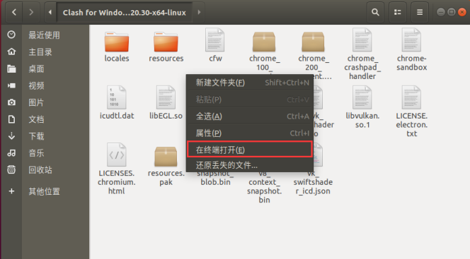
图3.鼠标右键后点击在终端打开
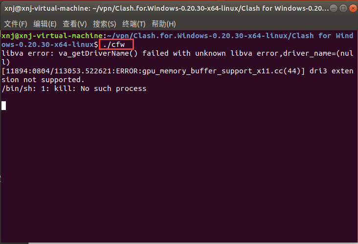
图4.在终端中输入./cfw
2.2在打开的vpn界面中找到Profiles选项
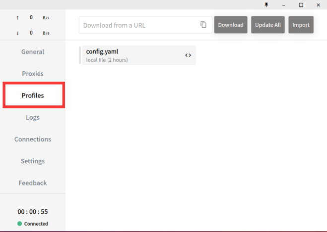
图5.Profiles界面
2.3在上方的Donload from a URL词条中粘贴你的订阅链接，并点击Download选项，就会生成一个.yaml文件（文件左侧的绿色竖条表示配置成功）

图6.1官网中复制你的订阅链接
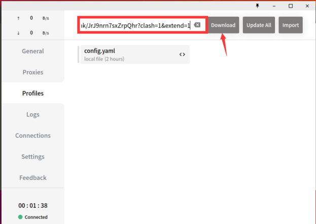
图6.2粘贴你的订阅链接
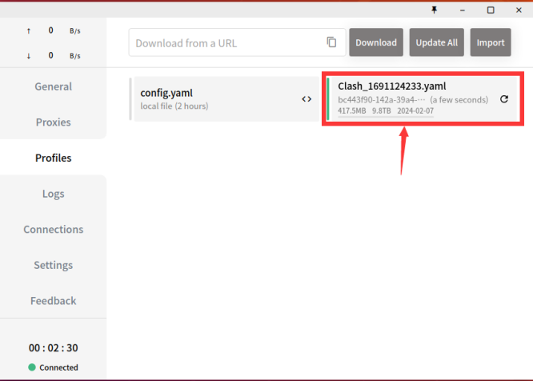
图7.订阅配置成功后生成的.yaml文件
2.4在左边的边框中点击Proxies选项，就会看到有节点选择界面，在Rule下点击你想选择的流量类型就可以选择你想要的节点了（节点左侧的绿色竖条表示该节点是你配置成功的节点）
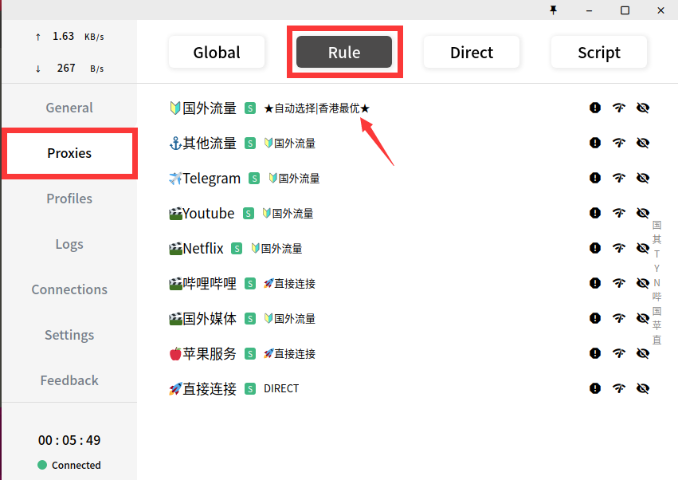
图8.Proxies界面下的Rule选项
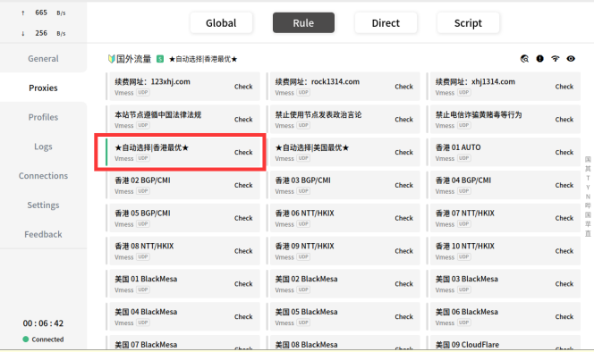
图9.选择你想要的节点
3.配置ubuntu
3.1Linux界面的右上角点击设置选项，蓝色方框圈起来的就是配置号的VPN图标
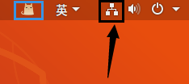
图10.unbuntu的设置选项
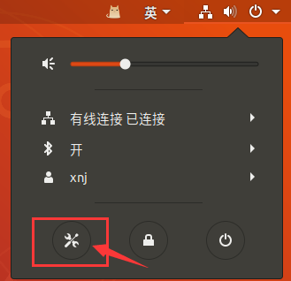
图11.设置选项
3.2在设置界面点击网络选项，在网络选项界面点击网络代理
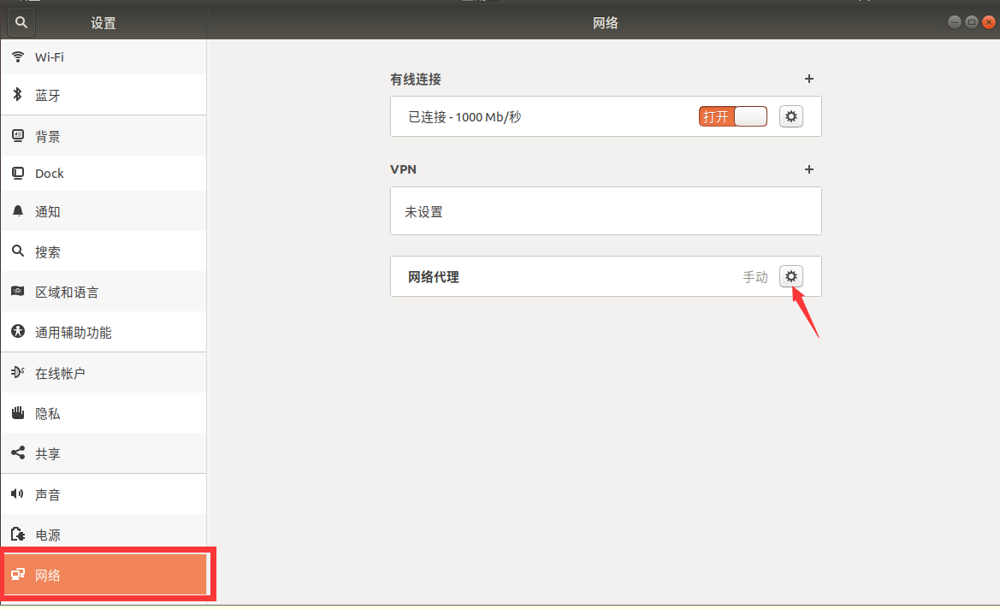
图12.网络设置界面中的网络代理
3.2在网络代理界面选择手动，并将HTTP代理、HTTPS代理、Socks主机的ip地址都指向VPN配置的网络代理端口
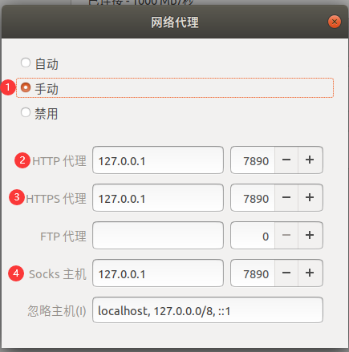
图13.网络代理配置
3.3设置好之后点击关闭选项，此时你的虚拟机就可以使用VPN提供的网络了
4.终端配置
在配置好ubuntu之后如果需要在终端使用外网进行下载，还需要配置一些东西
4.1现在打开终端输入
1 | curl -v https://www.baidu.com |
可以看到终端可以打开百度浏览器，但如果输入
1 | curl -v https://www.google.com |
则打开失败
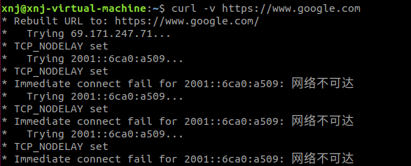
图14.未配置时候打不开google
4.2配置，在终端中输入
1 | export http_proxy=127.0.0.1:7890 |
之后再运行
1 | curl -v https://www.google.com |
可以发现可以打开google，并且使用了代理通道。如果需要清除代理则输入：
1 | unset http_proxy |
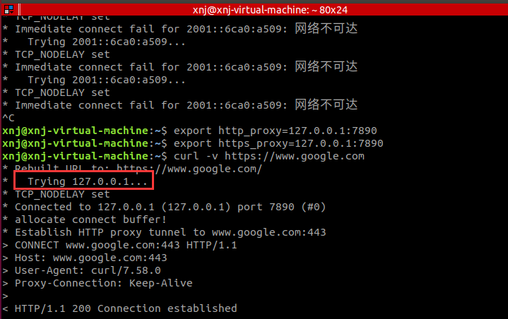
图15.配置与配置之后的效果
5.网络软件的配置
方法一：若ubuntu没有配置，那么在配置好VPN之后打开浏览器的设置选项
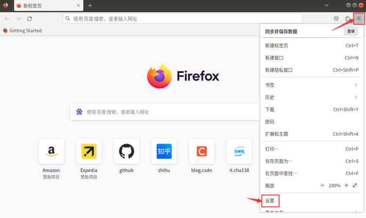
图16.浏览器的设置选项
打开网络设置选项选择手动配置代理，设置HTTP代理、HTTPS代理、Socks主机的ip地址都指向VPN配置的网络代理端口
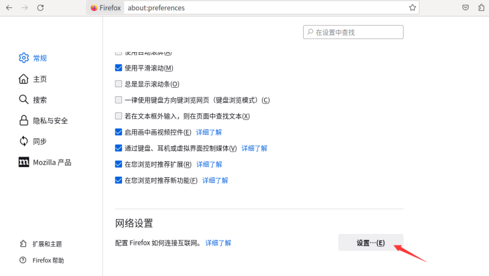
图17.浏览器的网络设置选项
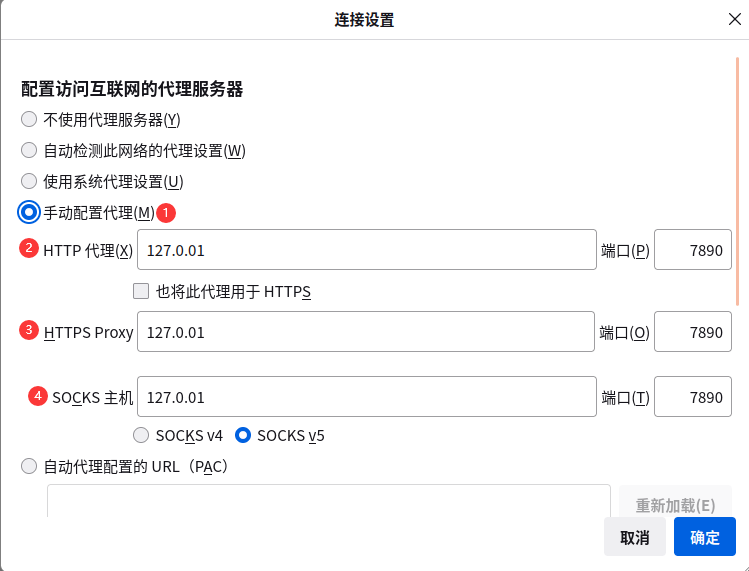
图18.代理设置
方法二：ubuntu配置成功之后可以直接浏览器的网络代理设置选择使用系统代理设置
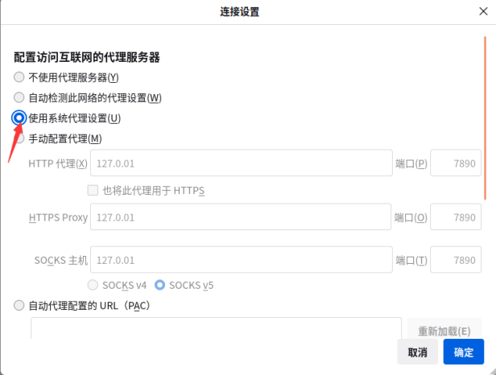
图19.代理设置
6.主机ip地址查询、VPN代理的网络端口号查询
6.1打开终端输入
1 | ifconfig -a |
如果没有ifconfig工具，则安装该工具输入
1 | sudo apt-get install net-tools |
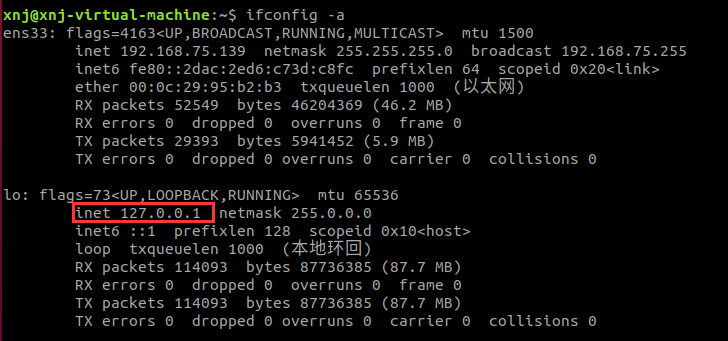
图20.主机ip地址查询
6.2VPN代理端口号查询，在General界面可以看到Port为7890
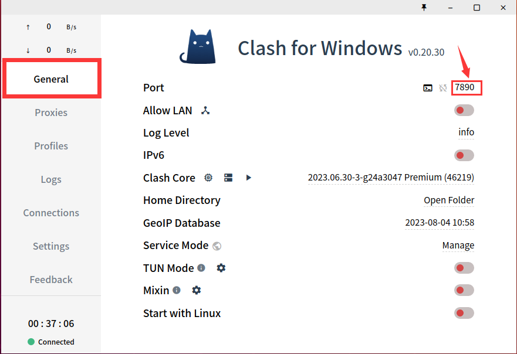
图21.vpn代理端口号查询
7.创建一个Clash的快捷应用图标
7.1打开终端，输入
1 | cd ~/.local/share/applications/ |
进入应用编写的文件夹下，写一个可执行的文件clash.desktop（建立文件：vim file_name.desktop、输入：按键盘上的i键、保存退出：先按Esc再输入:wq）：
1 | [Desktop Entry] |
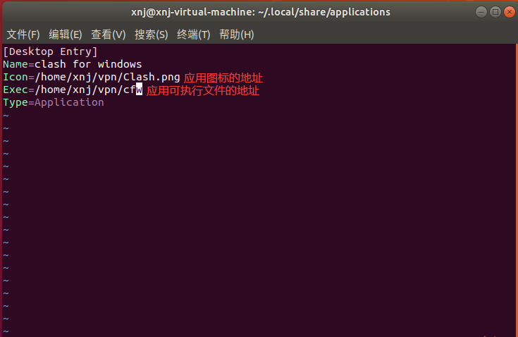
图22.编写clash.desktop
7.2给文件添加执行权限
在clash.desktop的目录下输入：
1 | chmod +x clash.desktop |
可以看到添加之后文件变为了绿色。
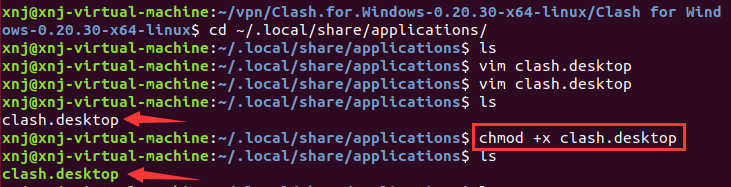
图23.添加可执行权限
7.3此时打开ubuntu的应用界面可以找到我们自己添加的应用了
图24.编写的应用
8.终端创建快捷键
8.1此时打开终端输入
1 | vim ~/.bashrc |
在文件中输入：
1 | alias setclash="export http_proxy=http://127.0.0.1:7890;export https_proxy=http://127.0.0.1:7890" |
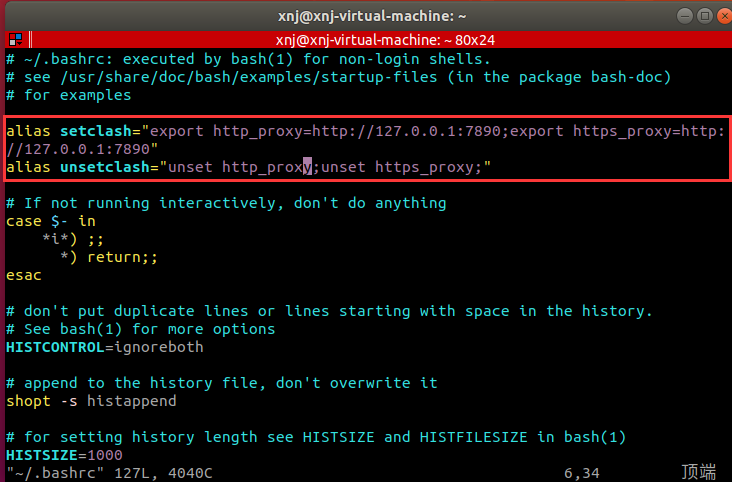
图25.编写快捷命令
8.2将该文件编译一下
在终端中输入：
1 | source ~/.bashrc |
此时在终端中输入setclash和unsetclash就可以成功打开关闭代理了